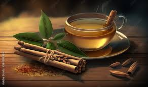

Cinnamon Tea

Ingredients Required:
- Cinnamon Sticks
- Honey
- Lemon
- Mint Leaves
- water
Process of Making:
- Take a sauce pan and pour one glass of water in it.
- Heat it for 2 minutes and wait until water comes to boil.
- Now add two-inch long cinnamon sticks and simmer it for few minutes.
- After a while, the colour of water changes and becomes flavourful.
- Turn off the flame and filter the contents in to a glass.
- Add two teaspoons of Honey in it and squeeze a medium lemon slice in the tea.
- Finally garnish the tea by putting two-three mint leaves on it.
- Now your fabulous cinnamon tea is ready to be sipped.